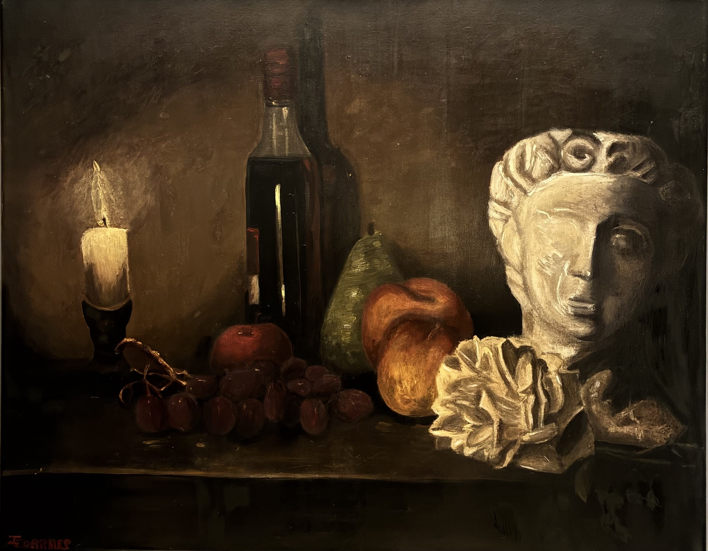

OBRA · 2026
Lo que pasa en la tierra se queda en la tierra

Sobre la obra
Lo que pasa en la tierra se queda en la tierra
Esta naturaleza muerta reúne una vela, una botella, frutas, una escultura y otros elementos que dialogan con la fugacidad, el deseo y la permanencia de lo material. La composición construye una atmósfera oscura donde los objetos funcionan como símbolos de aquello que pertenece al mundo terrenal y, finalmente, permanece en él.
Adquirir
Consultar disponibilidad.
Esta obra se encuentra disponible. Para solicitar información sobre compra, envío o entrega, puedes ponerte en contacto directamente.
Consultar obra